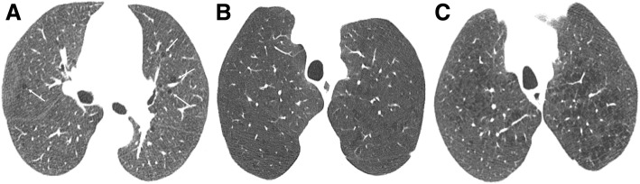
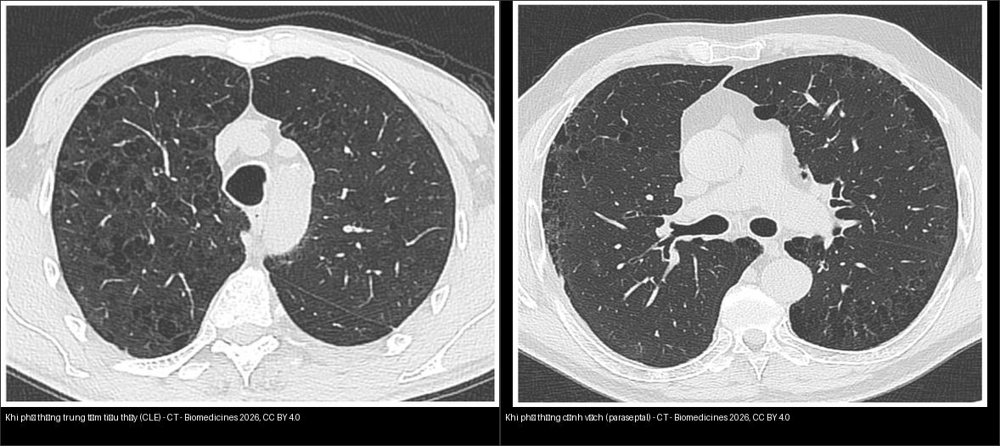
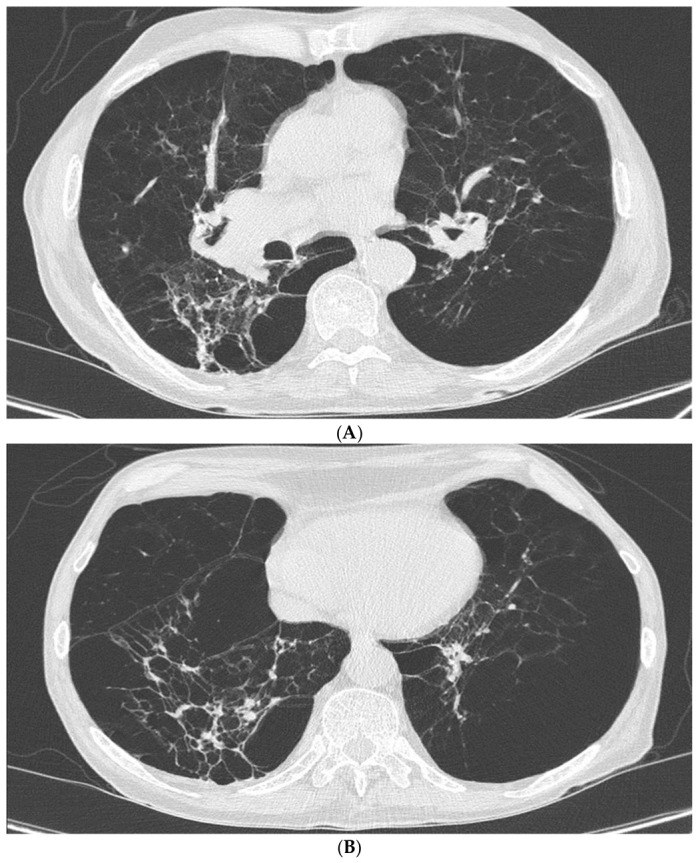

052 — Khí phế thũng vs đa kén khí / Emphysema vs Cystic lung diseases
Tags: pattern:qua-sang vung:phoi protocol:HRCT-hit-tho-ra score:Fleischner-CLE
Mức chắc chắn (certainty): tổng hợp y văn (literature synthesis) — nhóm tự biên từ y văn mở (Insights into Imaging, Biomedicines, Diagnostics), có ca minh họa giấy phép CC BY.
1. Tổng quan — không thành vs có thành + phân độ Fleischner CLE
- Khí phế thũng (emphysema): giãn bất thường khoang khí phía sau tiểu phế quản tận do phá hủy vách phế nang → vùng giảm đậm độ KHÔNG có thành thật. Kén khí (cyst): khoảng khí CÓ thành (biểu mô/xơ) rõ, thường ≤ 2 mm (LAM/LCH/BHD — bài
050). Tổ ong (honeycombing): kén chung vách dày, xếp tầng ở đáy/dưới màng = sẹo xơ cuối (UIP — bài035). - TẠI SAO phân biệt được (cơ chế): khí phế thũng = mất vách nên bờ không có đường đậm; kén = thành biểu mô/xơ nên thấy viền mảnh; tổ ong = xơ hóa chung vách nên viền dày + xếp tầng. Đây là chốt hình học, không dựa vào kích thước.
- Ba thể khí phế thũng (vị trí quyết định tên):
- Trung tâm tiểu thùy (centrilobular — CLE): vùng giảm đậm độ ở trung tâm tiểu thùy, quanh tiểu phế quản, có chấm động mạch trung tâm (central dot); ưu thế thùy trên; người hút thuốc. TẠI SAO có central dot: tiểu động mạch đi kèm tiểu phế quản bị phá hủy quanh nó → thấy mạch nhỏ nổi giữa vùng đen.
- Cạnh vách (paraseptal): hàng vùng đen dưới màng phổi, ưu thế đỉnh, vách mảnh; khi vỡ → tràn khí màng phổi tự phát ở người trẻ (bài
041). - Toàn tiểu thùy (panlobular): lan tỏa, ưu thế ĐÁY, phá hủy đồng đều cả tiểu thùy; gặp ở thiếu alpha-1 antitrypsin (người trẻ, không hút thuốc).
- Phân độ Fleischner CLE (2015): trace (vài đốm) → mild (nhẹ) → moderate (trung bình) → confluent (hợp lưu) → advanced destructive (phá hủy tiến triển). Nhớ: trace ở người hút thuốc gần như sinh lý theo tuổi, đừng gọi bệnh ầm ĩ.
- Ngưỡng định lượng: định lượng thể tích bằng % diện tích phổi có mật độ < −950 HU (%LAA-950)** trên HRCT hít sâu; khí phế thũng đáng kể thường khi **%LAA-950 > ~5–10% (giá trị tùy máy/chỉnh năng lượng). Đo không đổi giữa hít vào và thở ra giúp loại bẫy khí giả.

Khí phế thũng trung tâm tiểu thùy nhẹ (trace) — vùng giảm đậm độ không thành, có chấm động mạch trung tâm. Nguồn: Sousa et al., Insights into Imaging 2019 Fig. 4, CC BY 4.0.2. Gamut giảm đậm độ phổi
- CLE (hút thuốc, thùy trên): không thành + central dot — đừng nhầm kén.
- Cạnh vách (paraseptal, đỉnh/dưới màng): hàng đơn dưới màng, vỡ → tràn khí tự phát thanh niên (bài
041). - Toàn tiểu thùy (panlobular, đáy, thiếu alpha-1): lan tỏa đáy, trẻ không hút thuốc.
- Kén LAM/LCH/BHD: có thành ≤ 2 mm (bài
050); tổ ong UIP: tầng + vách dày + đáy (bài035). - Khảm tưới máu (mosaic): vùng đen do bẫy khí (mạch nhỏ lại, chỉ hiện thì thở ra) vs do mạch (mạch to/cụt — thuyên tắc mạn) — bài
051.
3. Bảng so sánh phân biệt (ma trận đối chiếu)
| Thực thể (entity) | Hình ảnh điển hình | Chốt vào (rule-in) | Chốt loại (rule-out) | Gợi ý xác nhận |
|---|---|---|---|---|
| CLE (trung tâm tiểu thùy) | Vùng giảm đậm độ trung tâm tiểu thùy, thùy trên, không thành, có central dot | Không thành + central dot + ưu thế trên + hút thuốc | Có thành viền mảnh → kén thật (LAM/LCH) | HRCT; %LAA-950 định lượng; cai thuốc |
| Cạnh vách (paraseptal) | Vùng đen dưới màng, ưu thế đỉnh, vách mảnh hàng đơn | Dưới màng + đỉnh + người trẻ | Phân bố đáy lan tỏa → panlobular | HRCT; hỏi tiền sử tràn khí |
| Toàn tiểu thùy (panlobular) | Lan tỏa, ưu thế ĐÁY, phá hủy cả tiểu thùy | Đáy + trẻ/không hút + tiền sử gia đình | Ưu thế trên + central dot → CLE | Định lượng alpha-1 antitrypsin (SERPINA1) |
| Kén thật (LAM/LCH/BHD) | Khoảng khí có thành ≤ 2 mm, phân bố đặc trưng | Có thành + hình dạng/phân bố (LAM đều, LCH kỳ dị) | Không thành → khí phế thũng | CT; liên hệ bài 050 |
| Tổ ong (UIP) | Kén chung vách dày, xếp tầng, đáy/dưới màng | Tầng + vách dày + đáy | Ưu thế trên không tầng → khí phế thũng | CT; bài 035 |
| Bẫy khí (mosaic) | Vùng đen chỉ hiện thì thở ra, mạch nhỏ lại | Khác biệt hít vào–thở ra + mạch nhỏ | Không đổi theo thì thở → nhu mô/mạch | HRCT 2 thì; bài 051 |

Trái: CLE — vùng giảm đậm độ rải rác ở thùy trên, không thành, quanh tiểu phế quản (central dot). Phải: paraseptal — vùng đen vách mảnh dưới màng, ưu thế đỉnh. Nguồn: Ari et al., Biomedicines 2026 Fig. 1 & 2, CC BY 4.0 (ảnh ghép letterbox).4. Protocol
- HRCT lồng ngực: hít sâu (lát mỏng 1–1,5 mm) + thì thở ra (bẫy khí) khi nghi bệnh đường thở nhỏ; MIP mỏng (nốt trung tâm) + MinIP (bẫy khí). Đo mật độ, %LAA-950 khi cần định lượng.
- Chức năng hô hấp: tắc nghẽn không hồi phục (FEV1/FVC < 0,7 sau test giãn phế quản) + DLCO giảm (mất giường mao mạch).
- Điều trị/khuyến nghị: cai thuốc là can thiệp hiệu quả nhất; vắc-xin cúm/phế cầu; phục hồi chức năng.
- Nghi thiếu alpha-1 antitrypsin: tuổi trẻ + ưu thế đáy + không/ít hút thuốc → định lượng enzyme + kiểu gen SERPINA1 (bài này).
flowchart TD
A[Vùng phổi giảm đậm độ trên HRCT] --> B{Có THÀNH rõ không?}
B -->|Có thành ≤ 2 mm| C[Kén thật: LAM/LCH/BHD - bài 050]
B -->|Có thành, chung vách dày + tầng + đáy| D[Tổ ong UIP - bài 035]
B -->|Không thành| E{Vị trí ưu thế?}
E -->|Trung tâm tiểu thùy + central dot + trên| F[CLE: hút thuốc, phân độ Fleischner]
E -->|Dưới màng + đỉnh| G[Paraseptal: nguy cơ tràn khí - bài 041]
E -->|Lan tỏa + ĐÁY| H[Panlobular: định lượng alpha-1 antitrypsin]
F --> I[Cai thuốc + đo %LAA-950 + DLCO]
G --> I
H --> I
5. Biến thể bình thường và cạm bẫy
- CLE trace ở người hút thuốc gần như bình thường theo tuổi — đừng thổi phồng thành bệnh; đối chiếu tuổi + số bao-năm.
- Bẫy khí không làm hết sức giả bẫy khí lan tỏa — hướng dẫn BN + kiểm tra vòm hoành nâng lên (bài
051). - Kén cạnh vách đỉnh vỡ gây tràn khí — hỏi tiền sử tràn khí tái phát (bài
041). - CPFE (xơ + khí phế thũng kết hợp): xơ ở đáy + khí phế thũng ở trên → thể tích phổi "bình thường giả", nhưng DLCO tụt sâu và nguy cơ tăng áp phổi; đừng bỏ sót vì FEV1/FVC "không điển hình".
- Xẹp đáy (dependent atelectasis) giả kính mờ vùng trắng — chụp prone xác nhận.
- Khí phế thũng do bẩm sinh (alpha-1) dễ bị gọi "COPD tuổi già" ở người trẻ không hút — luôn cân nhắc định lượng enzyme.
6. Tự lượng giá — Blind Quiz
Ca 1 — Người hút thuốc, vùng giảm đậm độ thùy trên, không thành, chấm trung tâm. Gọi tên + mức độ.
- Hỏi: có thành không? Chấm trung tâm là gì? Trace có cần làm gì?
Bấm để hiện đáp án
- CLE trace: không thành + central dot ở người hút thuốc — ghi nhận + cai thuốc, không thổi phồng thành bệnh.
- Nguồn: Sousa et al., Fig. 4, CC BY 4.0.
Ca 2 — Hai bệnh nhân, cùng vùng phổi giảm đậm độ. Bên nào CLE, bên nào cạnh vách (paraseptal)?
- Hỏi: vị trí tổn thương (trung tâm tiểu thùy vs dưới màng/đỉnh)? Bệnh nào nguy cơ tràn khí màng phổi tự phát?
Bấm để hiện đáp án (findings + chẩn đoán)
- Trái = CLE: vùng giảm đậm độ rải rác thùy trên, không thành, quanh tiểu phế quản (central dot).
- Phải = paraseptal: vùng đen vách mảnh, dưới màng, ưu thế đỉnh.
- Chốt: paraseptal là thể dễ vỡ → tràn khí màng phổi tự phát ở người trẻ (bài
041). - Nguồn: Ari et al., Biomedicines 2026 Fig. 1 & 2, CC BY 4.0 (ảnh ghép letterbox).
Ca 3 — Nữ trẻ không hút thuốc, khó thở, vùng phổi giảm đậm độ lan tỏa ưu thế ĐÁY. Đọc CT.

- Hỏi: vì sao ưu thế đáy + tuổi trẻ lại quan trọng? Cần xét nghiệm gì?
Bấm để hiện đáp án (findings + chẩn đoán)
- Dấu hiệu (findings): phá hủy lan tỏa cả tiểu thùy hai bên, ưu thế đáy, vách phế nang còn lại mỏng, dày thành phế quản (A, B) — kiểu toàn tiểu thùy (panlobular).
- Chẩn đoán (diagnosis): khí phế thũng toàn tiểu thùy do thiếu alpha-1 antitrypsin — vì người trẻ, không hút thuốc, ưu thế đáy; cần định lượng alpha-1 antitrypsin + kiểu gen SERPINA1.
- Nguồn ảnh: Ragnoli et al., Diagnostics 2026 Fig. 2, CC BY 4.0.
Bài liên quan chéo
- 001 – Tổng quan hệ Ngực
- 035 – Xơ mô kẽ UIP vs NSIP (tổ ong)
- 041 – Tràn khí màng phổi (vỡ kén cạnh vách)
- 050 – Giãn PQ & kén khí (kén thật)
- 051 – Tiểu phế quản & khảm tưới máu (bẫy khí, mosaic)
Không dùng để chẩn đoán độc lập khi chưa có người hướng dẫn.